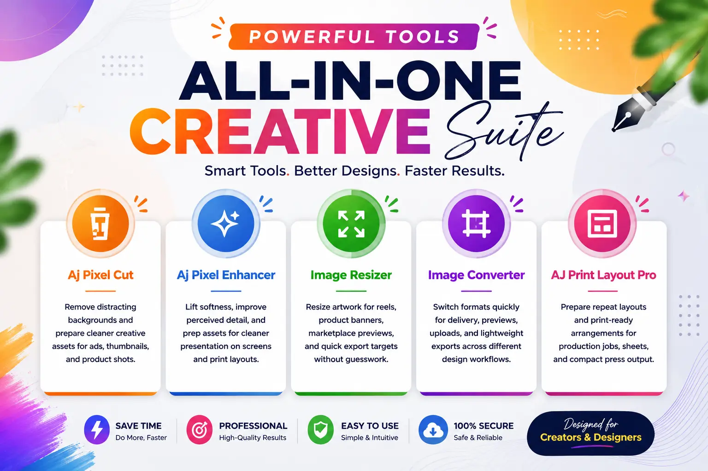

Aj Pixel Cut
Remove distractions and isolate subjects for ads, product shots, and quick social-ready exports.
We kept the motion calm and the layout clean so the dashboard feels closer to a polished studio workspace than a noisy app launcher.

Remove distractions and isolate subjects for ads, product shots, and quick social-ready exports.
Improve clarity and presentation for previews, print mockups, and polished visual delivery.
Resize creatives for banners, reels, thumbnails, and marketplace previews without rethinking the layout.
Switch between formats for delivery, upload, and lightweight sharing across different workflows.
Transform color values between formats for brand work, UI design, and quick creative checks.
Build business cards, certificates, invitations, stickers, labels, flyers, and custom print sheets with the full studio setup.
The dashboard now feels airy and deliberate, with one clear action per card and less visual noise.
Quick access to the current toolkit.
Bright surfaces, soft shadows, minimal motion.
Each card shows the tool purpose at a glance.